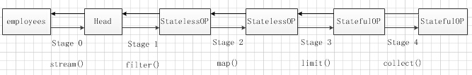
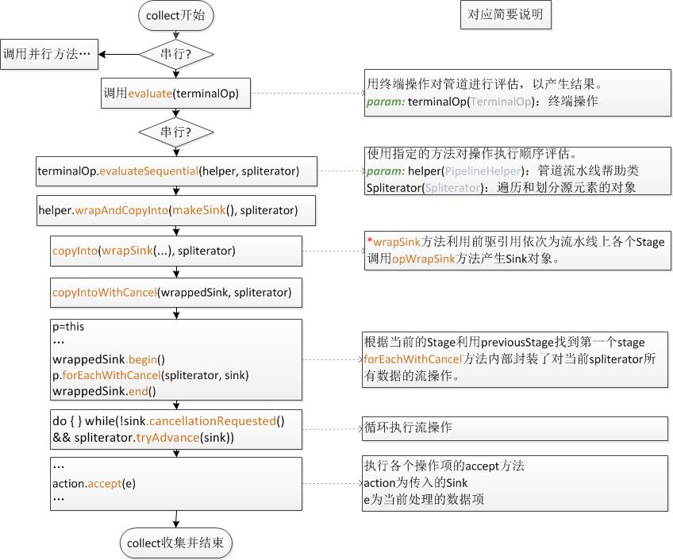

stream流原理浅析¶
| 时间: | 2018年3月10日 |
|---|
Note
java8中提供了强大的stream流处理，通过其提供的例如过滤(filter)、映射(map)、截取(limit)、收集(collect)等一系列方法的组合，可以很好的解决对集合数据的复杂操作，仅以此篇对stream流水线式组合原理进行浅析，望知其然并知其所以然。
文档目录¶
- 对比小示例
- stream流的操作类型和惰性求值
- stream部分源代码浅析
- 小结
- 参考
对比小示例¶
先举一个利用java8 中stream流方法与之前方法的一个简单示例：获取公司员工列表中年龄大于20的前三个员工的名字。
//定义Employee类
class Employee {
private Integer id;
private String name;
private Integer age;
public Employee(Integer id, String name, Integer age) {
this.id = id;
this.name = name;
this.age = age;
}
public Employee() {
}
//属性getter和setter方法......
}
//构造的员工数据列表
List<Employee> employees = new ArrayList<>();
employees.add(new Employee(20180001, "Tom", 26));
employees.add(new Employee(20180002, "Lucy", 29));
employees.add(new Employee(20180003, "John", 23));
employees.add(new Employee(20180004, "Green", 27));
处理方式1: 传统集合处理方式
List<String> names = new ArrayList<>();
int count = 0;
for(Employee employee: employees) {
if(employee.getAge() > 25) {
names.add(employee.getName());
count++;
}
if(count >= 3) {
break;
}
}
处理方式2：stream流式处理：
List<String> names = employees.stream().filter(x -> x.getAge() > 25).map(Employee::getName).limit(3).collect(toList());
两种方式都能得出相同的结果即：
["Tom", "Lucy", "Green"]
上面示例可以看出，两种方式在获取满足要求的员工名字列表的判断逻辑相去不大，比较年龄->映射名字->判断数量；但stream函数式风格各个处理阶段分工明确，有条不絮，比如再加上名字不重复的前3个名字(按列表顺序)，stream中直接在limit()方法前挂一个distinct()即可，而集合处理方式的代码复杂度无疑大大增强。
stream流的操作类型和惰性求值¶
stream流的操作可粗分为两种：中间操作和终端操作。中间操作仅记录了操作，只有在终端操作时才会触发真正的计算过程；终端操作又可以分为短路与非短路操作，前者是指遇到某些符合条件的元素就可以得到最终结果；而后者是指必须处理所有元素才能得到最终结果。 细分如下表[ 引用传送门 ]：
| Stream操作分类 | ||
|---|---|---|
|
无状态(Stateless) | unordered filter map mapToInt mapToLong mapToDouble flatMap flatMapToInt flatMapToLong flatMapToDouble peek |
| 有状态(Stateful) | distinct sorted limit skip | |
|
非短路操作 | forEach forEachOrdered toArray reduce collect max min count |
| 短路操作 | anyMatch allMatch noneMatch findFirst findAny | |
惰性求值：惰性，懒惰也，啥意思？看个例子先： 示例2 惰性求值：
Stream<String> nameStream = employees.stream().filter(x -> x.getAge() > 25)
.map(student -> {
System.out.println(student.getName());
return student.getName();
}).limit(3);
System.out.println("--------------");
nameStream.collect(toList());
结果:
--------------
Tom
Lucy
Green
粗看println方法好像是在那一排横线前面的，怎么打印到后面去了呢？例子中体现的就是中间操作(filter|map|limit)差不多起个定义作用，具体的计算调用操作是等到后面的终端操作进行的(collect)，等到实在需要结果的时候再计算。后面源码浅析部分会介绍。
我这抛出两个小问题先：
- 流处理过程数据是如何传递的？
- 终端操作如何触发中间操作？
stream源代码浅析¶
以示例1的stream流水线进行跟踪分析，看看每个操作内部具体的实现。先简单有个这样的概念：
- 流处理的每个操作叫做一个Stage；
- 每个Stage可以理解成为是通过双向链表进行链接
即：
再放一张各操作的继承结构图：

stage0: 将eployees转换为流，实际上产生了一个Head，这个Head相当于双向链表的链头
//step1: 调用Collection的stream方法产生一个流
default Stream<E> stream() {
return StreamSupport.stream(spliterator(), false);
}
//step2: 调用StreamSupport的stream方法
public static <T> Stream<T> stream(Spliterator<T> spliterator, boolean parallel) {
Objects.requireNonNull(spliterator);
return new ReferencePipeline.Head<>(spliterator,
StreamOpFlag.fromCharacteristics(spliterator),
parallel);
}
//step3 创建Head，并通过supper初始化继承链上对应的AbstractPipeline相关属性
AbstractPipeline(Spliterator<?> source, int sourceFlags, boolean parallel) {
//当前Stage置为null
this.previousStage = null;
//设置数据source
this.sourceSpliterator = source;
this.sourceStage = this;
this.sourceOrOpFlags = sourceFlags & StreamOpFlag.STREAM_MASK;
// The following is an optimization of:
// StreamOpFlag.combineOpFlags(sourceOrOpFlags, StreamOpFlag.INITIAL_OPS_VALUE);
this.combinedFlags = (~(sourceOrOpFlags << 1)) & StreamOpFlag.INITIAL_OPS_VALUE;
this.depth = 0;
this.parallel = parallel;
}
Stage1: fliter()方法的相关定义，fliter()方法接收一个参数即函数式接口Predicate，通过该接口定义的test方法来测试flilter的自定义过滤条件。
@Override
public final Stream<P_OUT> filter(Predicate<? super P_OUT> predicate) {
Objects.requireNonNull(predicate);
return new StatelessOp<P_OUT, P_OUT>(this, StreamShape.REFERENCE,
StreamOpFlag.NOT_SIZED) {
@Override
Sink<P_OUT> opWrapSink(int flags, Sink<P_OUT> sink) {
return new Sink.ChainedReference<P_OUT, P_OUT>(sink) {
@Override
public void begin(long size) {
downstream.begin(-1);
}
@Override
public void accept(P_OUT u) {
if (predicate.test(u))
downstream.accept(u);
}
};
}i
};
}
可以看到filter方法处理验证predicate的有效性外，就直接返回一个StatelessOp，StatelessOp里面重载了opWrapSink方法，该方法主要是通过终端操作时调用，先看看new的StatelessOp在干啥。
// 调用StatelessOp对应构造方法，除此之外，通过super将this
//(即通过Stage0中的Head)作为当前Stage的upstream（前驱引用）
StatelessOp(AbstractPipeline<?, E_IN, ?> upstream,
StreamShape inputShape,
int opFlags) {
//调用super将数据传递给ReferencePipeline并继续调用super传递给AbstractPipeline进行数据项设置
super(upstream, opFlags);
assert upstream.getOutputShape() == inputShape;
}
AbstractPipeline(AbstractPipeline<?, E_IN, ?> previousStage, int opFlags) {
...
previousStage.linkedOrConsumed = true;
//设置前驱引用的后继引用指向当前Stage
previousStage.nextStage = this;
this.previousStage = previousStage;
this.sourceOrOpFlags = opFlags & StreamOpFlag.OP_MASK;
this.combinedFlags = StreamOpFlag.combineOpFlags(opFlags, previousStage.combinedFlags);
this.sourceStage = previousStage.sourceStage;
if (opIsStateful())
sourceStage.sourceAnyStateful = true;
//设置方法链层次深度
this.depth = previousStage.depth + 1;
}
Stage2: map相关代码,和filter不同的是接收的参数是Function接口，最后传递给下游流是经过映射后的数据。
Override
@SuppressWarnings("unchecked")
public final <R> Stream<R> map(Function<? super P_OUT, ? extends R> mapper) {
Objects.requireNonNull(mapper);
return new StatelessOp<P_OUT, R>(this, StreamShape.REFERENCE,
StreamOpFlag.NOT_SORTED | StreamOpFlag.NOT_DISTINCT) {
@Override
Sink<P_OUT> opWrapSink(int flags, Sink<R> sink) {
return new Sink.ChainedReference<P_OUT, R>(sink) {
//为map量身打造的accept操作
@Override
public void accept(P_OUT u) {
downstream.accept(mapper.apply(u));
}
};
}
};
}
Stage3: limit方法设置最大数据量截取条数
@Override
public final Stream<P_OUT> limit(long maxSize) {
if (maxSize < 0)
throw new IllegalArgumentException(Long.toString(maxSize));
return SliceOps.makeRef(this, 0, maxSize);
}
Stage4: collect
@Override
@SuppressWarnings("unchecked")
public final <R, A> R collect(Collector<? super P_OUT, A, R> collector) {
A container;
if (isParallel() && ...) {
//并行方式
container = collector.supplier().get();
BiConsumer<A, ? super P_OUT> accumulator = collector.accumulator();
forEach(u -> accumulator.accept(container, u));
}
else {
//串行方式
container = evaluate(ReduceOps.makeRef(collector));
}
return collector.characteristics().contains(Collector.Characteristics.IDENTITY_FINISH)
? (R) container
: collector.finisher().apply(container);
}
collect的调用过程相对比较复杂，用流程图进行简要介绍(主要介绍串行方式)：
在本文给出的示例中，各个中间操作的accept方法具体执行时间是在collect阶段来完成的，更具体的就是执行了action.accept(e)，这也正好印证了stream流的惰性计算过程。换句话说，这一流式计算过程也实际上就是调用各个Stage中的accept方法过程。
小结¶
本片博客介绍的内容也不过stream流中的冰山一角，可能其中有理解不准确的，下一篇准备研究一下串并行之间的工作原理的不同之处以及串并转换过程。